Gallery
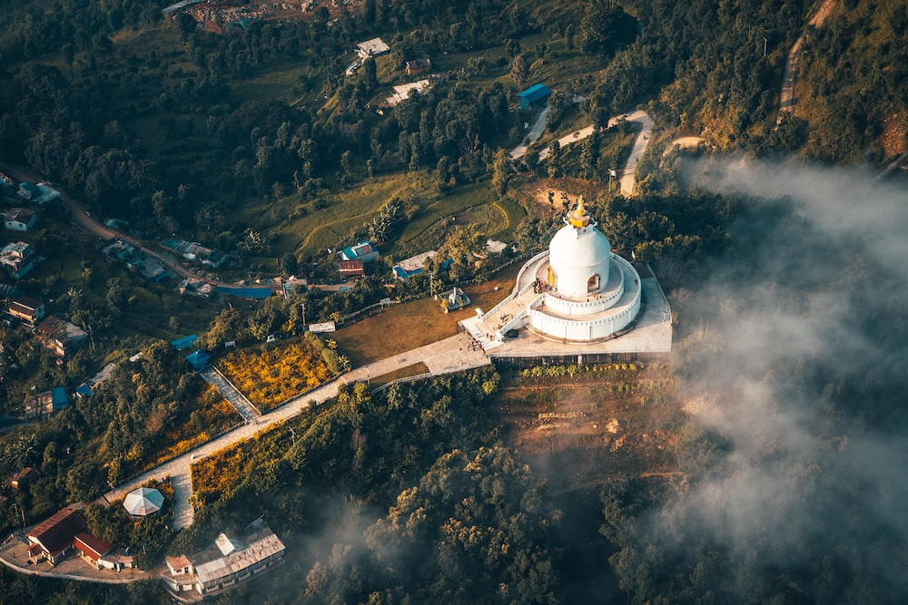
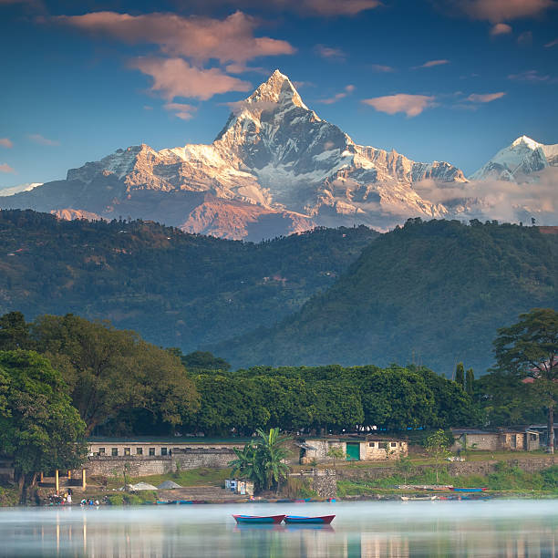
 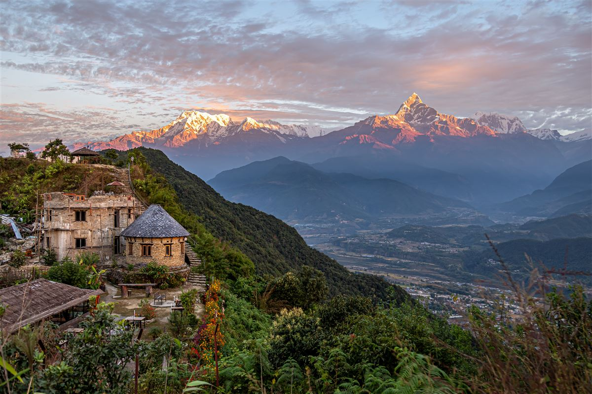
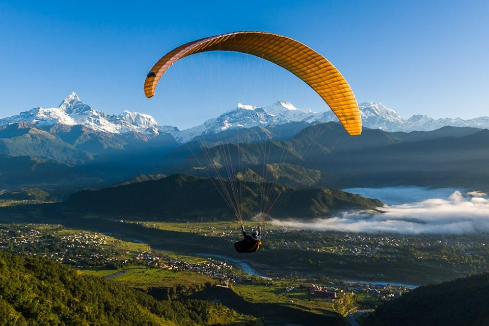
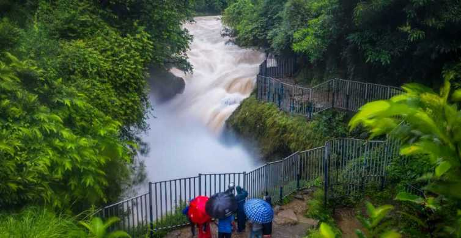
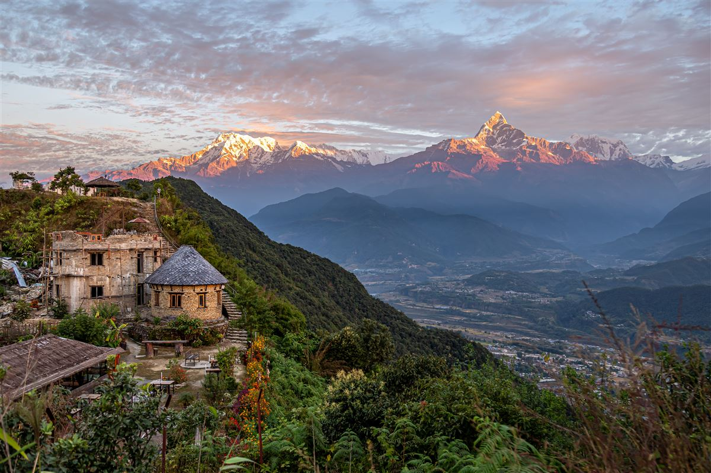
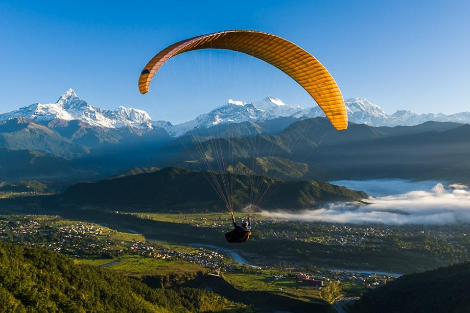
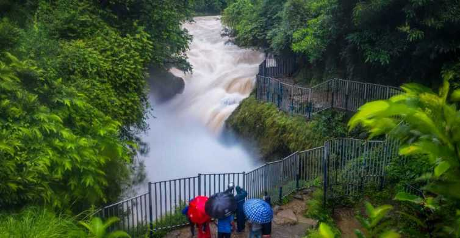
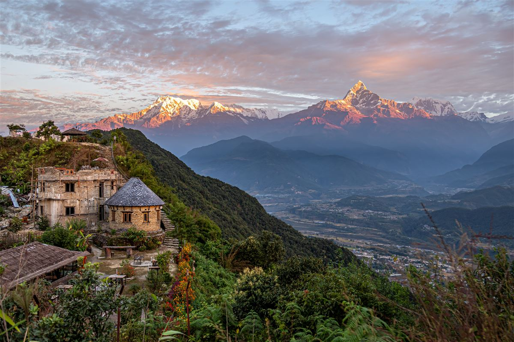
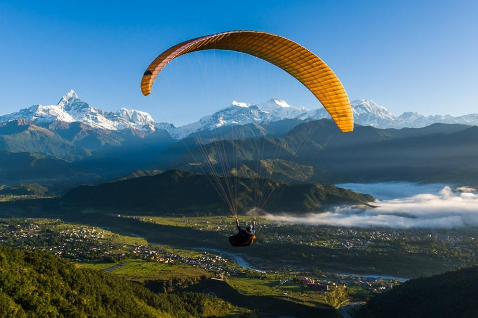
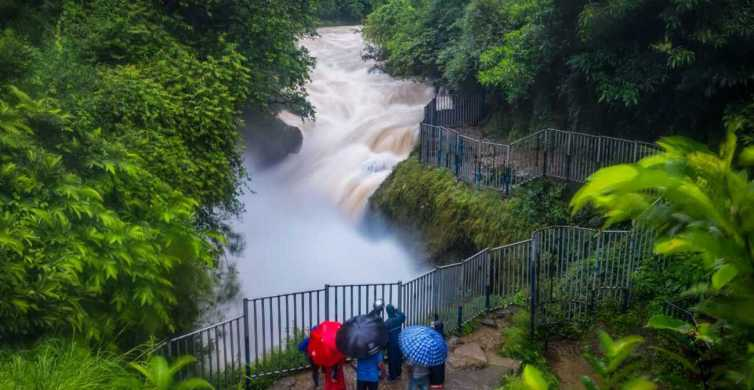
Pokhara’s tranquil beauty has been the subject of inspiration for many travel writers. Its pristine air, spectacular backdrop of snowy peaks, blue lakes and surrounding greenery make it ‘the jewel in the Himalaya’, a place of remarkable natural disposition. With the magnificent Annapurna range forming the backdrop and the serenity of the Cluster of 9 Lakes with three major ones - Phewa, Rupa and Begnas.
Pokhara once lay on the important trade route between India and Tibet. To this day, mule trains set up camps on the city outskirts, bringing goods from remote Himalayan regions including Mustang. Gurungs and Magars, who have earned world-wide fame as fierce Gurkha warriors, are predominant here. Thakalis, indigenous of the Thak Khola region of Mustang, are known for their entrepreneurship and run tea houses along the trek routes in the Annapurna region.
Pokhara is blessed with stunning panoramic views of the Annapurna range which forms its backdrop. The mesmerizing Machhapuchhre also called Mt. Fishtail dominates the scenery because of its proximity to the valley and can be seen from anywhere in Pokhara. Stretching from east to west, the Annapurna massif includes Annapurna 1 to IV and Annapurna South.
Pokhara’s Phewa Lake naturally draws visitors towards it. Easily the best means of recreation, boating is a favorite pastime which one can enjoy any time of day. The other two lakes, Begnas and Rupa, are located 15 km out of Pokhara. Less visited but no less beautiful, both these lakes are excellent for boating and fishing.
Paragliding is perhaps the most rewarding of short duration adventure sports given the fact that there is nothing between you and the scenery unfolding before you. In the distance lie the majestic Himalayas and down below are the villages, monasteries, temples, lakes and jungles, a truly bird’s eye view and a fascinating one at that.
Skydiving is a new sport in Nepal One more reason to come to Nepal if its not already in your bucket list. The difference between skydiving in Nepal compared to skydiving abroad is the spectacular 360 degree view of the Himalayas.For those who want to keep it less extreme, go to Pokhara, next to the mighty Annapurnas and the Phewa Lake below.
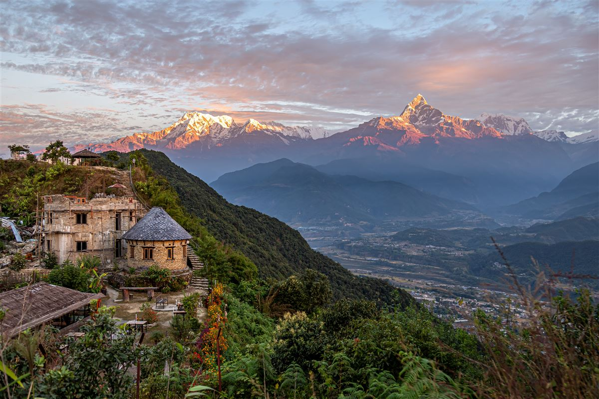
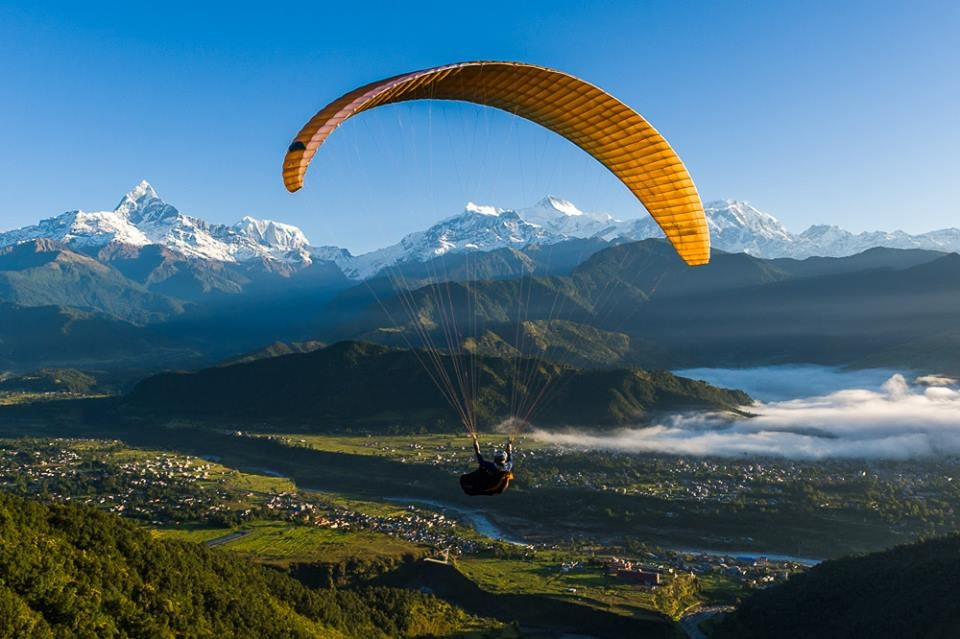
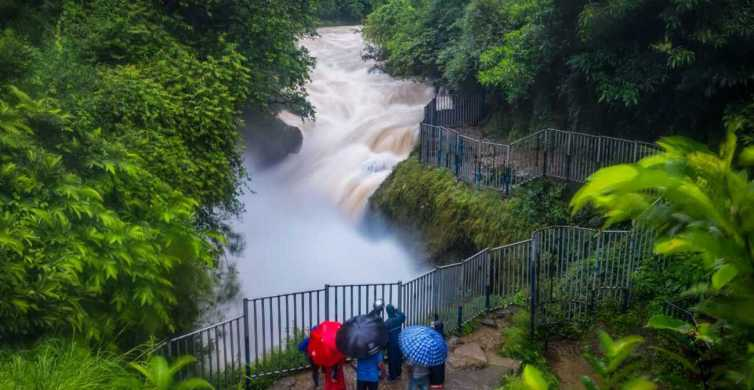